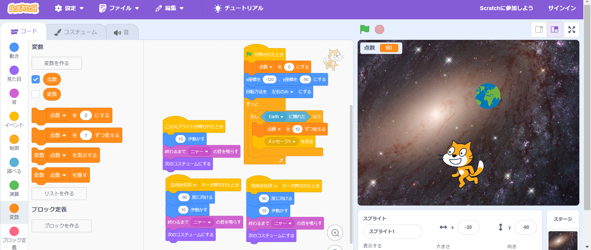
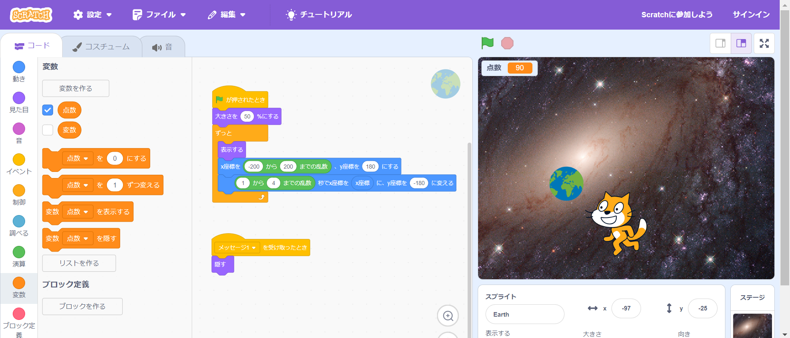

1-2 ゲーム

プログラム：ねこ

プログラム：地球(落下物)
1.内容
落下する地球を猫が拾うこと点数が得られるゲームを作成した。
《猫のプログラム》
猫のプログラムでは、地球に触れたときに点数が１０点加算されるようにした。
また、左右の矢印キーが押されたらコスチュームが反転し、左右に動けるようになっている。
《地球のプログラム》
地球のプログラムでは、乱数で落ちる速さや位置を1回ごとに変化させている。
2.感想
簡易的なゲームを作ることができてよかった。
また、落下物の落ちる速さが異様に速かったり、遅かったりして面白かった。